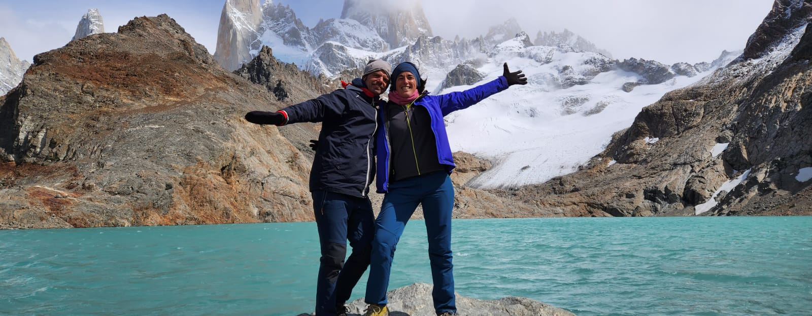

Excursión Destacada
Nombre de la Excursión o Lugar
Aquí describes la experiencia. Puedes hablar sobre la historia, lo que el viajero sentirá al estar allí, o detalles prácticos del recorrido. Esta estructura es limpia y fácil de leer para el usuario.
Saber más
Aventura Local
Otro Destino o Actividad
Al usar la clase 'inverso', la imagen pasará al lado derecho automáticamente en ordenadores, creando un diseño dinámico en forma de zig-zag que mantiene al lector interesado.
Ver detalles